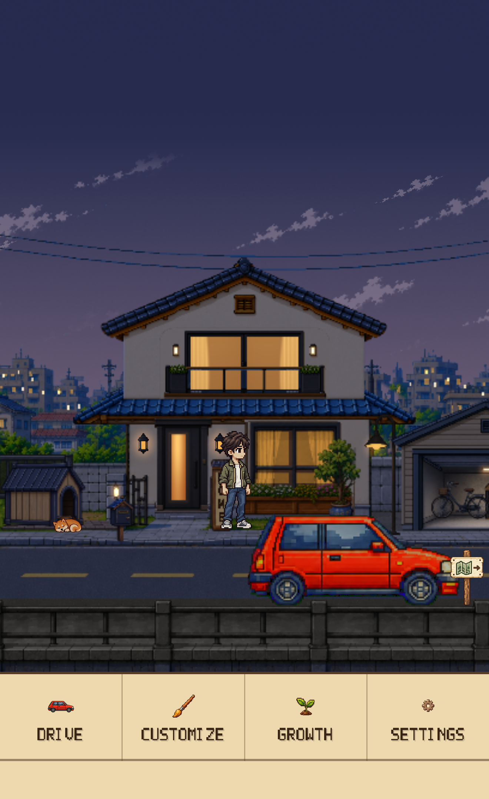
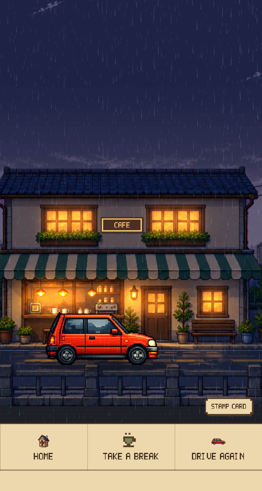
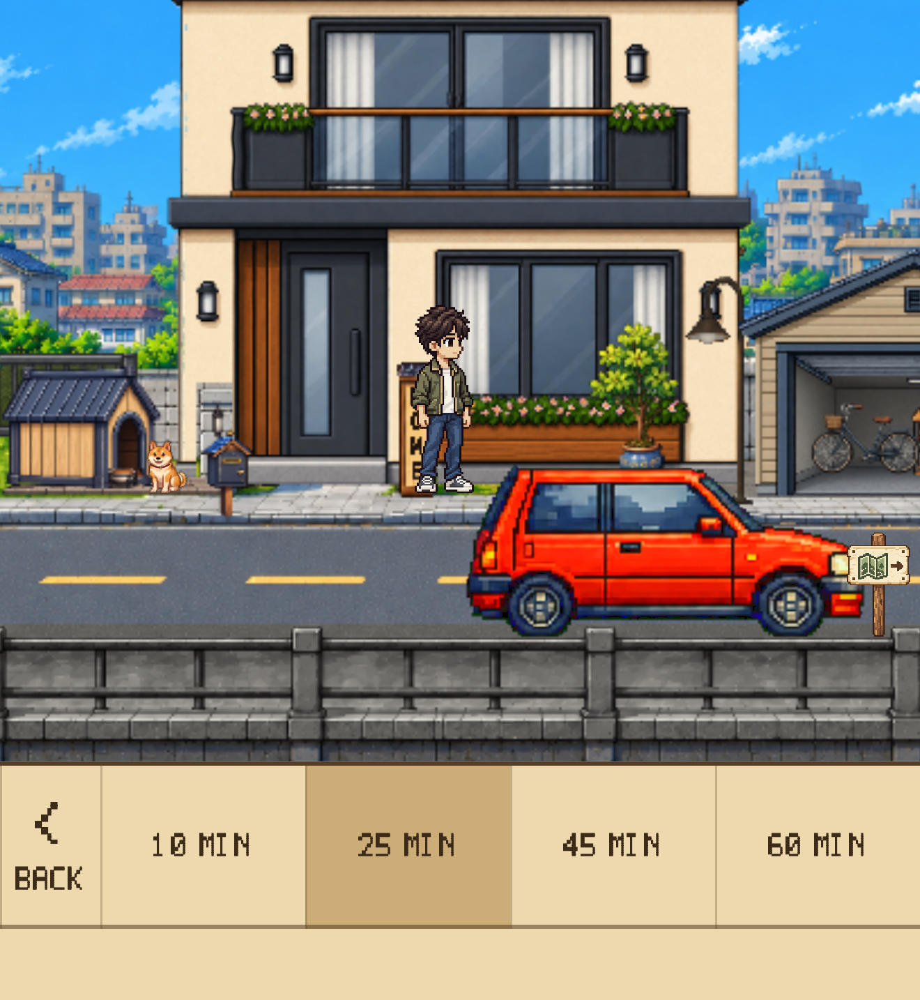
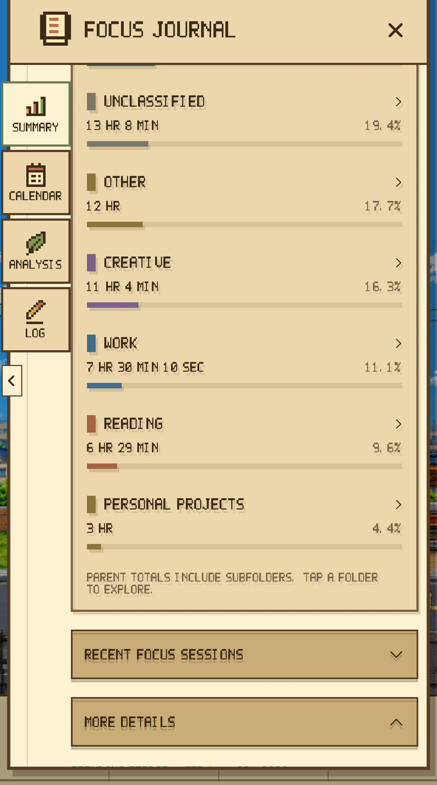
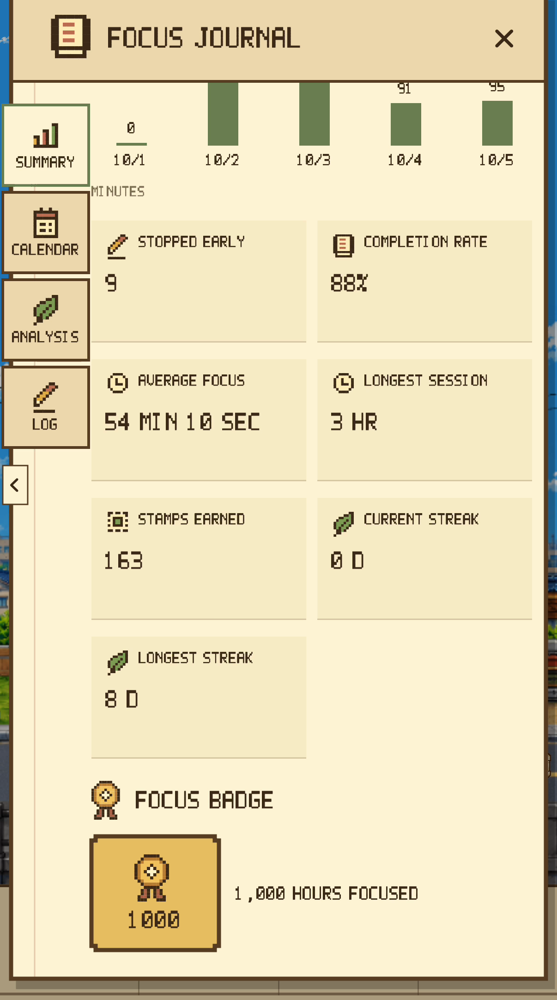
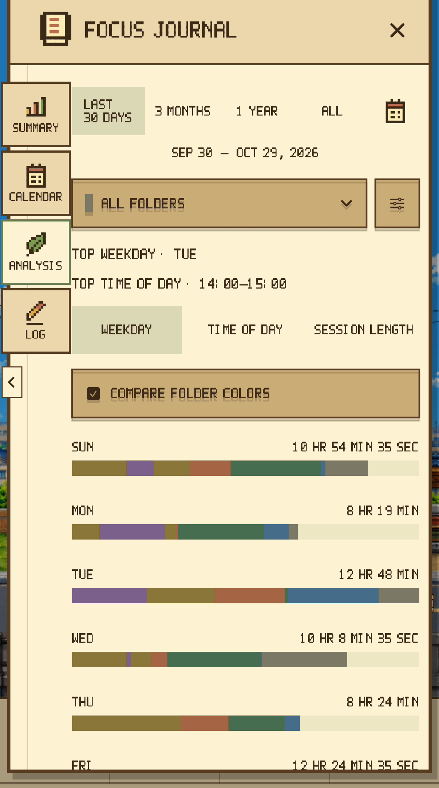
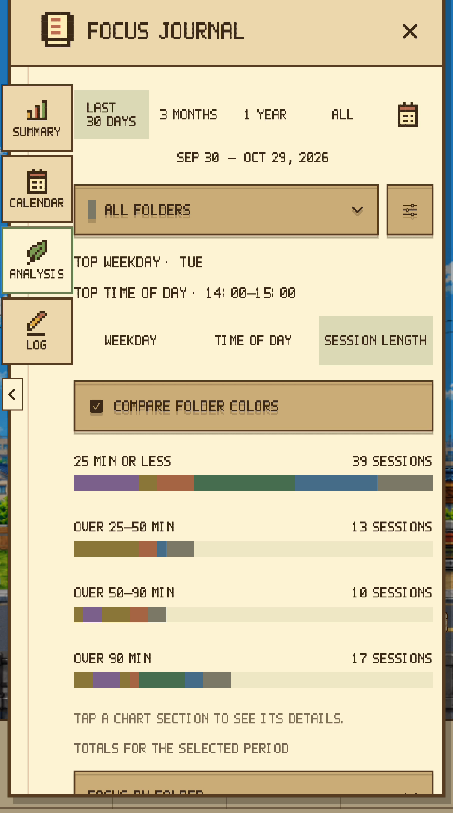
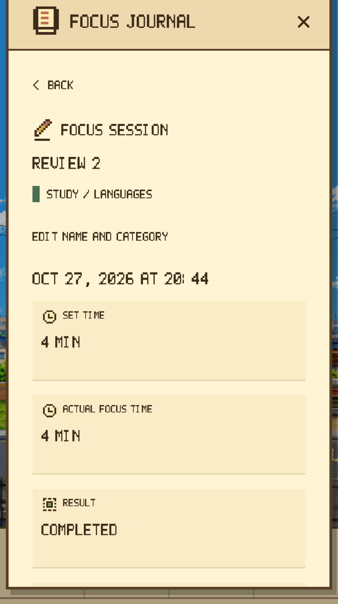

Set a duration → Start
Choose a 10, 25, 45, or 60-minute preset, or set hours, minutes, and seconds. An activity name is optional.
Press Kit
An iPhone focus timer for focus, reflection, growth, and rest.
Download ↓Official materials for press, reviewers, and creators
Dayroad brings pixel-art drives, a Focus Journal, and a growing Home together in an iPhone focus timer. Choose your task, make time for it, reflect on your habits, shape your own space, then take a cafe break.
See the App Store for supported devices and compatibility details.
For moments when starting feels difficult or another app pulls you away. Choose your task and duration; the car drives automatically while you study, read, or work.
Choose a 10, 25, 45, or 60-minute preset, or set hours, minutes, and seconds. An activity name is optional.

Focus Drive starts in automatic mode. Pause and resume the timer, and choose whether to show the remaining time.

Optionally block selected apps and categories with Screen Time permission. Using Focus Lock does not change the reward rules.
Website blocking is not supported. A Lock Screen Live Activity can show the remaining time, with a completion notification. Availability depends on device support, permission, and notification settings.
Unlock the mailbox at Home stage 1 to open the Focus Journal. Move between Summary, Calendar, Analysis, and Log to reflect on time actually spent focusing.

Review focus totals, trends, and comparisons by period. More details include completion rate, streaks, and badges for accumulated focus.

Choose a calendar date to see its focus time and sessions. Change the date or period to revisit earlier records.

Session lists and details distinguish the target, actual focus time, and completion status. Recording time and awarding Stamps follow separate rules.
Statistics and activity names are sample records for filming. They do not represent user results or one continuous session.
Start with a name, or choose a saved activity. Organize time with activities and folders, then explore your own focus habits in Analysis.

Folders support two levels. Parent totals include subfolders. Review focus time by folder or by activity.

Save and reuse activity names, or choose from recent and favorite activities. Edit record names and categories, and filter by folder.

Choose a period and folder to explore weekdays, time of day, and session lengths. Compare folder colors and inspect chart segments.
Editing a record’s name or category does not change measured focus time or Stamp rewards. Screens show sample records.
Each 25 accumulated minutes of actual focus earns one Stamp. Remaining time carries into the next session. Save the required Stamps, then spend them yourself at Home.

Actual focus time is recorded when a session finishes or stops. This screen shows an actual 25-minute completion and Stamp award.

Save the required Stamps, then choose to unlock the next stage. The required number differs by stage.

Your records and a growing space are designed to give your next focus session a small goal to look forward to.
Focus → Record → Stamps and manual unlock → Grow and customize Home → Focus again
Completing Japan’s 35 Home stages sets its remaining Stamp balance and carried time to zero, ending further Stamp awards there. Actual focus time, session history, and badges continue to accumulate.
Visible records and a growing space are designed to make the next focus session feel like a small step forward.
These are separate illustrative captures, not one continuous focus record.
From a small house to changing gardens and everyday scenes, Home develops through 35 stages. The mailbox opens at stage 1, car customization at 2, the avatar at 3, and the nameplate at 5.


Customization opens as your Home grows. Once unlocked, use the familiar lower menu to choose the details that make the space your own.
Choose your avatar’s gender, skin, hair, and outfit. Use unlocked options to make yourself part of the scenery.

Choose a red or white car. Your selection appears at Home and on your drives.

Enter a name for the plate outside your Home. The nameplate menu appears after its stage is unlocked.
Menu access follows the Home stages you have actually unlocked. Holding enough Stamps alone does not unlock a feature automatically.
Focus starts with automatic driving. Separate driving controls let you choose automatic or manual control, speed, and Top or Side View. Set the time of day automatically or manually; choose clear or rainy weather manually.
 01
01 02
02 03
03
Adjust music, ambience, and effects; rest at the cafe or set off again. Avatar and dog routines at Home, and changes in the surrounding scenery, give focusing and unwinding a shared setting.
For the time you have accumulated and the space you have made. A guide to saving, backups, languages, and the places in Dayroad.
Supports on-device saving, personal iCloud sync, and JSON export and restoration. Sync depends on your Apple account, iCloud, and network conditions. Keep separate backups of important records.
Open the Travel Atlas from Home to explore the current Japan area. The available Focus Drive is set in Japan. Other area listings do not mean playable content; additional regions and purchase scope follow separate announcements.
The app UI supports Korean, Japanese, and English. See the App Store for device compatibility.
Free Drive stays free, with no time limit. It does not award focus rewards.
Try Focus Drive, set against Japanese scenery, for 75 cumulative minutes. After that, a one-time Focus Drive Pass purchase unlocks continued access. There is no subscription, auto-renewal, or automatic charge when the trial ends.
The pass covers the current Japan-themed Focus Drive. Additional regions may be sold separately. Purchase restoration is available in the app.
Official App Store display checked October 29, 2026: KR ₩9,900 · JP ¥1,000 · US $6.99. Confirm the current local amount on the purchase screen.
ZIP: images, brand assets, press copy in three languages, and usage guidance. PDFs and videos are available as separate downloads.
UI comes from the actual app running in English. Scenery is shared; Focus Journal figures and activities are sample records. Do not present separate captures as one continuous session. WebP exports preserve source pixels with lossless compression.
Clear day · StreetsWEBP ↓Top-down driveWEBP ↓Home · Stage 0WEBP ↓Home · Stage 20WEBP ↓Home · Stage 35WEBP ↓Cafe sceneryWEBP ↓Rainy eveningWEBP ↓Focus setup · StartWEBP ↓Focus complete · StampsWEBP ↓Home · Manual unlockWEBP ↓Home · After unlockWEBP ↓
Home menuWEBP ↓
Cafe menuWEBP ↓Focus Lock settingsWEBP ↓
Choose a durationWEBP ↓Focus Drive · TimerWEBP ↓Focus Journal · SummarySample records for filmingWEBP ↓Focus Journal · Folders and subfoldersSample records for filmingWEBP ↓
Focus Journal · Folder totalsSample records for filmingWEBP ↓
Focus Journal · Statistics and badgeSample records for filmingWEBP ↓Focus Journal · CalendarSample records for filmingWEBP ↓
Focus Journal · Weekday analysisSample records for filmingWEBP ↓Focus Journal · Time-of-day analysisSample records for filmingWEBP ↓
Focus Journal · Session-length analysisSample records for filmingWEBP ↓Choose an activity · Recent and favoritesSample records for filmingWEBP ↓Customize the carWEBP ↓Customize the nameplateWEBP ↓Focus Journal · Session logSample records for filmingWEBP ↓
Focus Journal · Session detailsSample records for filmingWEBP ↓Edited promotional films for articles and reviews. Journal figures and activities are samples; some scenes combine real app footage with native menu footage. Do not describe these as App Store-approved App Previews.
An iPhone focus timer for pixel-art drives, a personal Focus Journal, a Home to grow and customize, and time to unwind.
Use these materials in articles, reviews, videos, and blogs covering Dayroad. Please preserve the product name and avoid misleading edits. Suggested credit: Dayroad / Junho Kim. Standalone resale, reuse as assets for another product, and music extraction are not permitted. Contact us for other uses.
Dayroad developer
 Wordmark · SVG ↓
Wordmark · SVG ↓